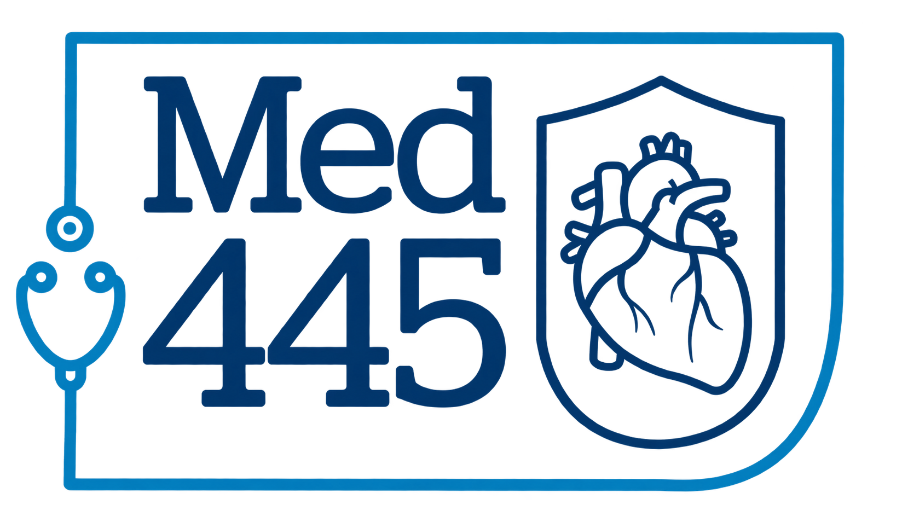

Medical Question BankGift 445
تنبيه: حدثوا الصفحة بشكل دوري عشان توصلكم التحديثات.
A Structured Medical Question Bank.
A structured question bank for Medicine, Surgery, Community Medicine, Informatics, Research, and Radiology—organized for focused, continuous review.
Subject based
Batch review
Lecture focus
Choose a subject
Select a subject to begin a clear, structured review.